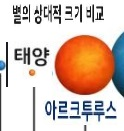
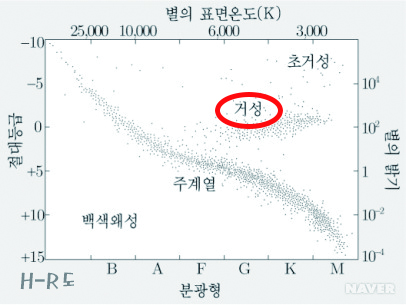

적색 거성
- H-R도에서 주계열성의 오른쪽 위에 분포한다.
- 광도는 같은 분광형의 주계열성보다 크며, 밀도는 주계열성보다는 작은 편이다.
적색 거성 사진 ↓

적색 거성에서의 항성진화
헬륨핵융합으로 중심에서 헬륨이 고갈되면 수소연소가 끝났을 때의 과정이 반복되고 두 번째 적색거성 단계인 점근거성가지를 따라가는 진화과정을 겪게된다. 질량이 매우 작아 태양질량의 20%미만 정도 되는 별은 헬륨 연소를 할 수 없어 적색거성가지의 끝에 이르지도 못하고 별의 외피층을 방출하며 백색왜성으로 진화한다.